《手搓魔法》11-25 商店素材更新审阅
这次换的是新的能量环元素牌和新的战斗界面布局，素材全部从当前游戏实机录制，没有 AI 画面。文案、图标、宣传图不变。
新素材已经传到素材库，商店页面还没换。等 V-20261125（定时 11-25 09:03）上线、你确认这些素材之后，我新建草稿换上，再提审（立即上线）。
1. 宣传片（16:9，31 秒）
- 结构、节奏、旁白和薇丝塔的台词跟线上 v5 一样，只把游戏画面全部换成新录的。
- 每段游戏画面都是完整的整屏（竖屏 1080×1920 等比缩放，上下左右都不裁），两侧是同一画面的模糊背景。
- 「万物归暗」「混沌创世」的动画现在长一点，这两段稍微挪了起点 / 放慢一点，好卡准原来的节拍。
2. 实机录屏（竖屏，27 秒，只有游戏原声）
剪法跟线上一样，画面全部新录；开头 5 秒就是打出能量环卡牌。
3. 截图（左：线上现在的；右：新的）
| 截图 | 线上 | 新 |
|---|
| 1. 凑出牌型（高光） 重拍：能量环卡面 + 新战斗布局 | 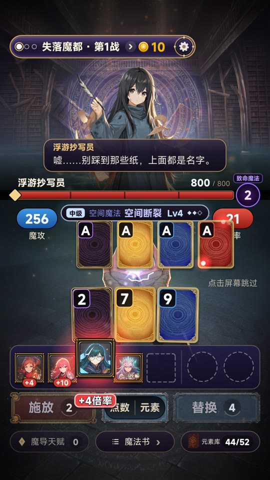 | 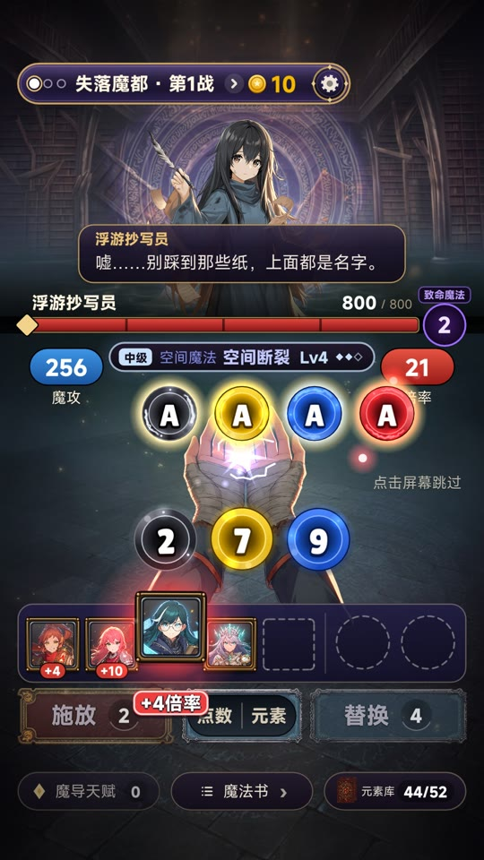 |
| 2. 禁咒 重拍（和线上一致） | 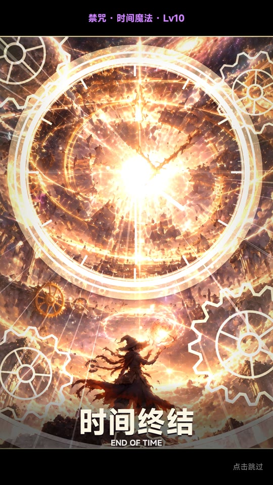 |  |
| 3. 魔法书 重拍（和线上一致） | 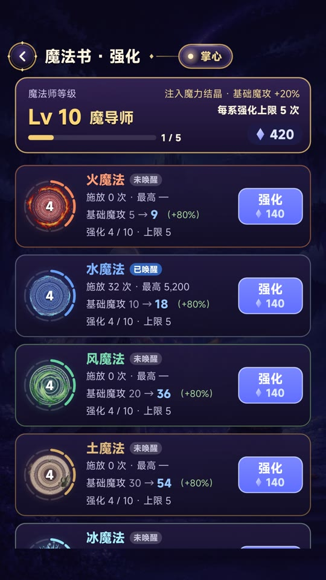 |  |
| 4. 守泉女 CG 沿用（无卡牌） | 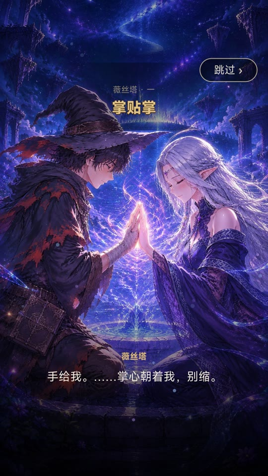 |  |
| 5. 商店 重拍 | 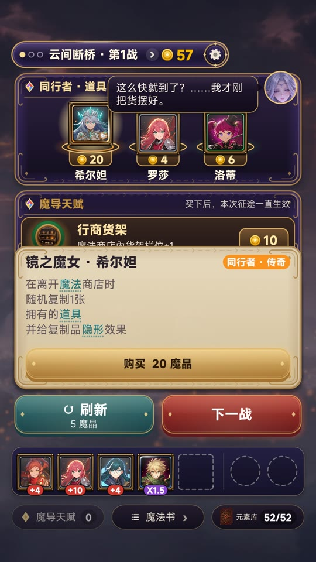 | |
| 6. 守关者 重拍：选关页换成新的「第三幕 / 第7关」卡 | 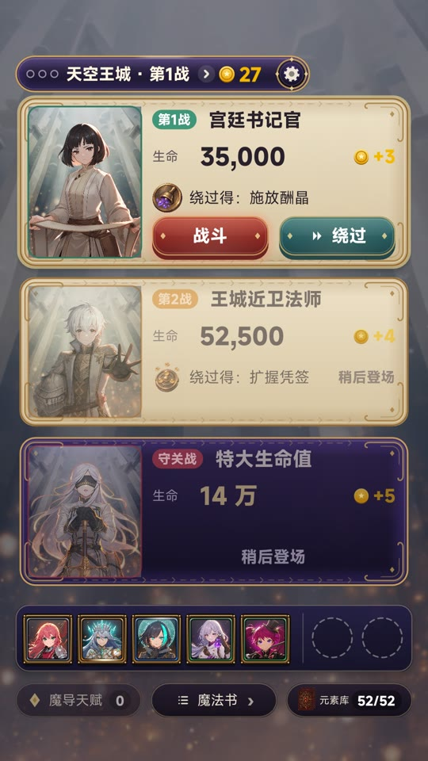 | 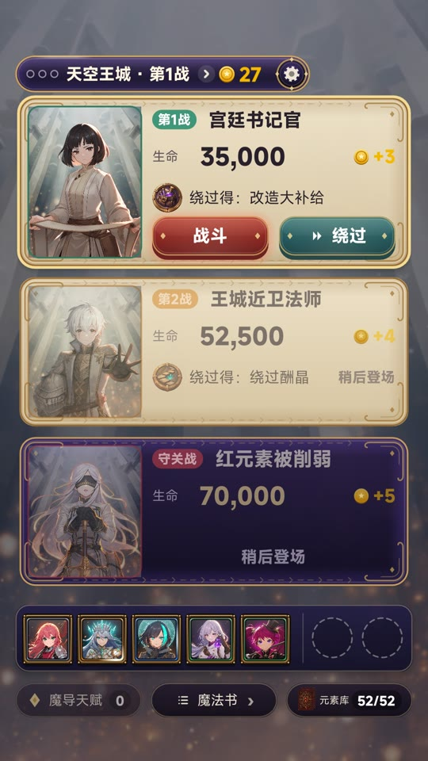 |
| 7. 第一次放魔法 重拍：能量环卡面 + 新战斗布局 | 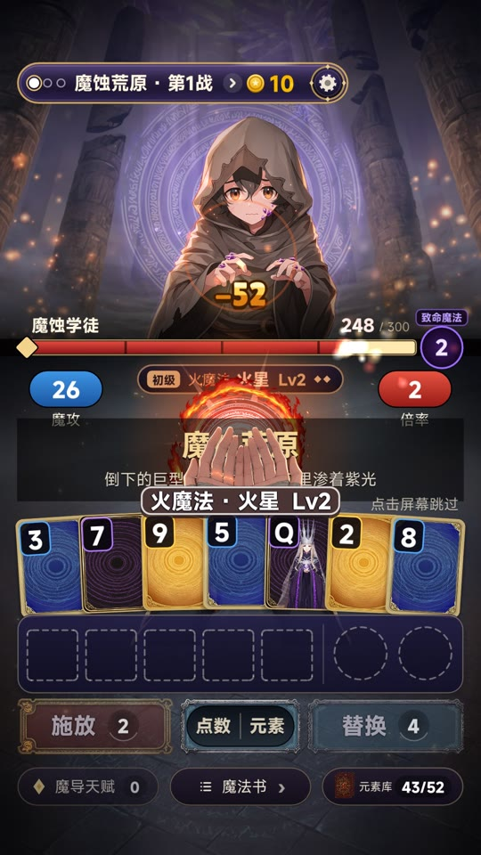 | 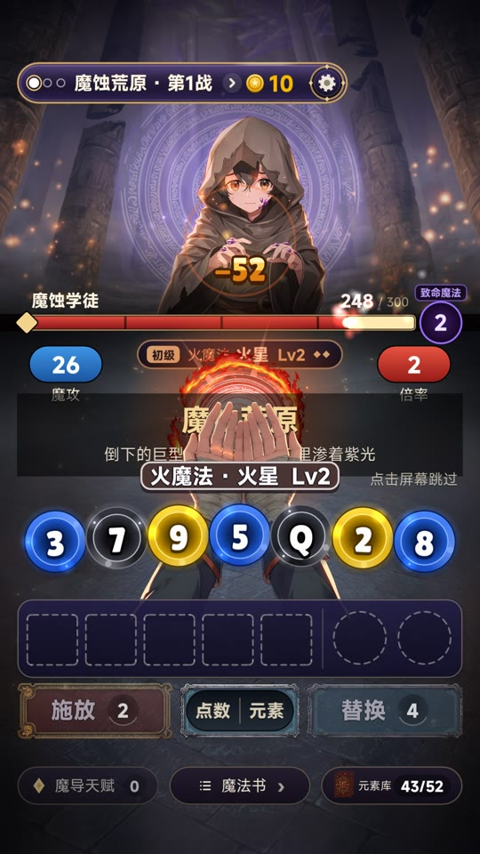 |
| 8. 营地 重拍：当天七日之约设为已领，免得弹窗挡住营地 | 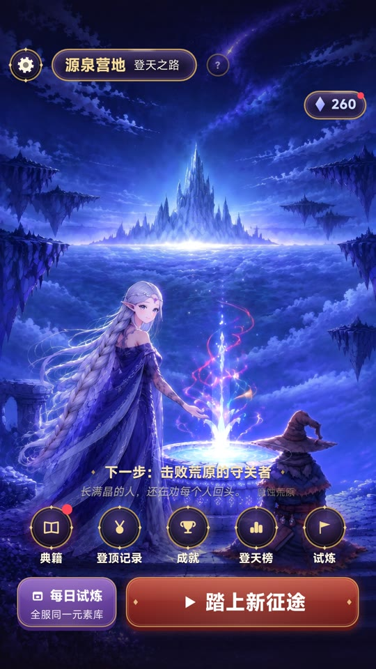 | 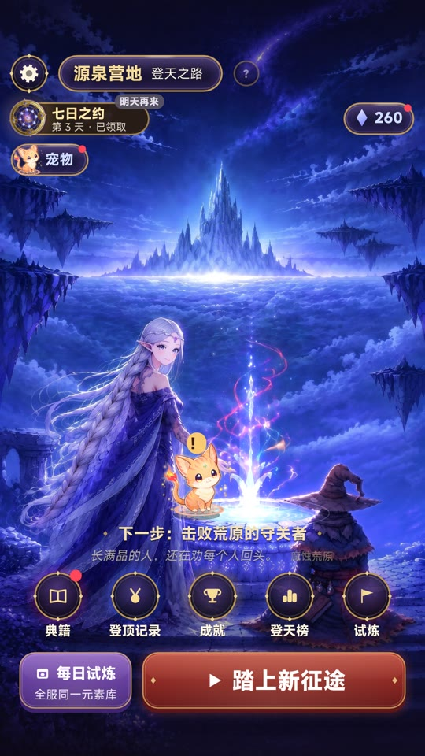 |
网页里的视频和图片压缩过，方便手机打开；商店用的是原画质（视频 1920×1080 / 1080×1920，截图 1080×1920）。